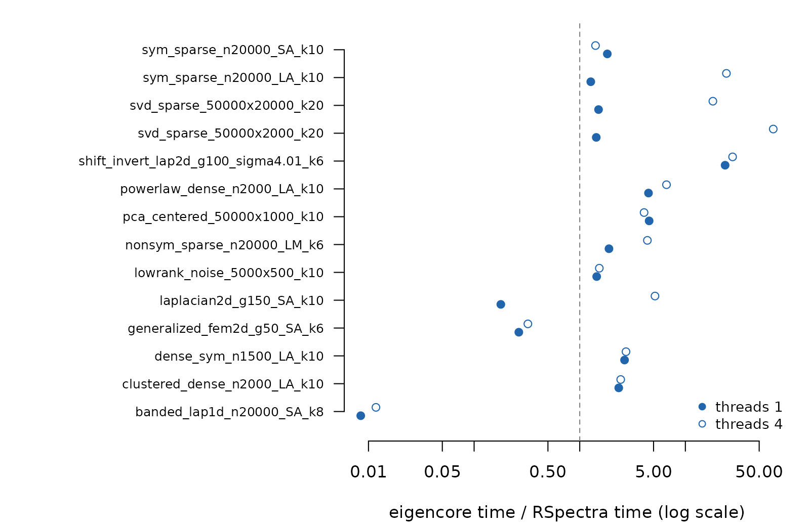
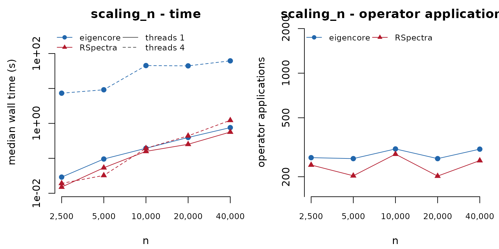
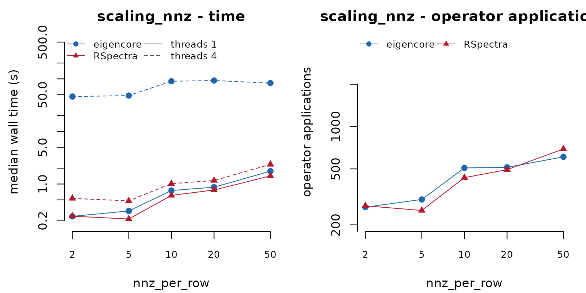
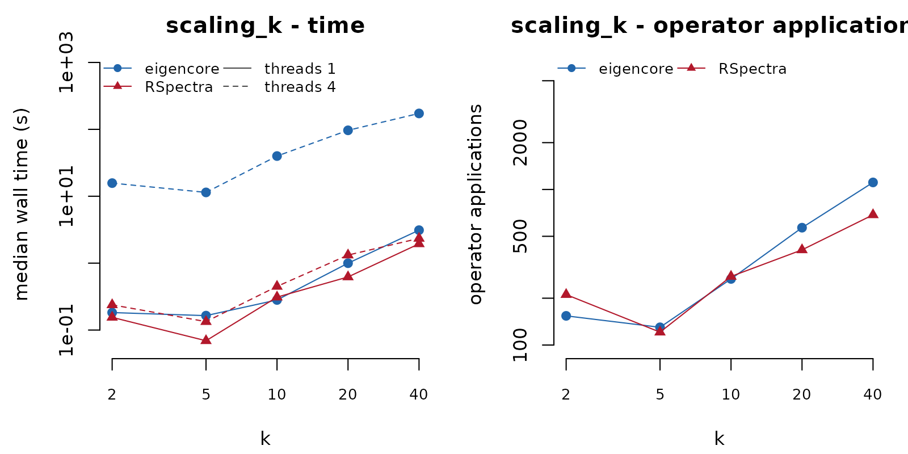
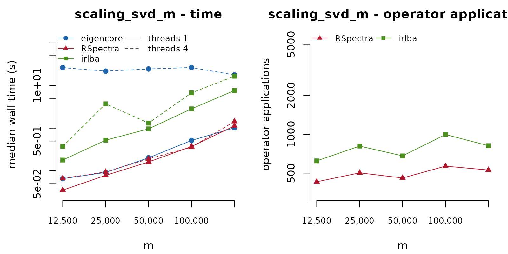
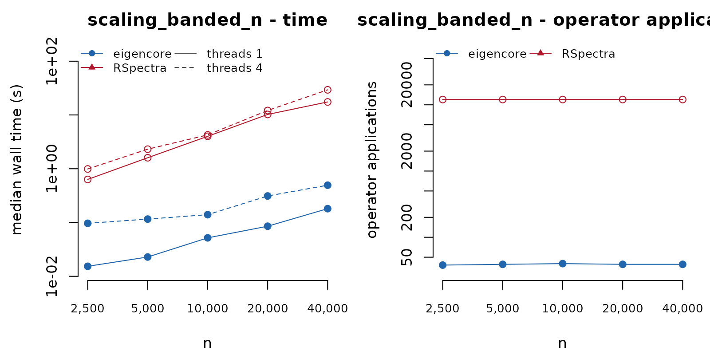

Benchmarks: what we measure and what it means
Source:vignettes/articles/benchmarks.Rmd
benchmarks.RmdThis is a pkgdown-only article, not a CRAN vignette. It performs
no timing at build time: every number below is read
from result directories stored in the repository under
inst/benchmarks/results/, produced by the benchmark suite
inst/benchmarks/run-suite.R. Rebuilding the site never
changes a number; adding a result directory does.
What is measured and why
Each case is a deterministic problem (fixed
generator and seed) with a wanted set: the k largest or
smallest eigenvalues, the k eigenvalues of largest modulus,
the k eigenvalues nearest a shift, the k
largest singular triplets, or the full spectrum. Every
method (eigencore, RSpectra, irlba, PRIMME when
installed, and dense base R/LAPACK where it fits in memory) is run on
the same matrix with the same requested tolerance
(tol = 1e-8) and, for each case and method, the suite
records:
-
wall time: one untimed warm-up call, then the
median and minimum over
repstimed calls (5 in the standard profile). eigencore’s time always includes building its certificate; the other packages do no certification. -
operator applications (
matvecs): the hardware-independent work each package reports about itself: eigencore’swork()record (operator_columns + adjoint_columnsof the solve phase), RSpectra’snops, irlba’smprod, PRIMME’snumMatvecs. For shift-invert cases an application is a linear solve. eigencore’s explicit-Gram SVD paths do not apply the operator column by column, so they report no comparable count. -
memory: peak resident-set growth of the process
during the warm-up call (Linux, via
VmHWM), which includes C/C++ heaps, and the R heap high-water mark. Both are inresults.csv; neither is a cross-package claim. - accuracy, computed by the suite itself for every method’s output, defined in the next section, plus eigencore’s own certificate verdict.
Threads are a property of the run: each thread setting runs in a
fresh R process with OPENBLAS_NUM_THREADS,
OMP_NUM_THREADS, and
options(eigencore.threads) all set to the same value, so “4
threads” means the whole process (BLAS, LAPACK and eigencore’s OpenMP
kernels) had four. RSpectra and irlba are effectively single-threaded on
sparse inputs, so their 4-thread rows mostly measure noise.
The independent accuracy check
The suite does not trust any solver’s own residuals. For every returned pair it recomputes
- the residual
A x - lambda B x(B = Ifor standard problems), and for SVDs both sides,sqrt(||A v - sigma u||^2 + ||A' u - sigma v||^2); - the normwise 2-norm backward error
||r|| / ((||A||_2 + |lambda| ||B||_2) ||x||)(SVD:/ ||A||_2). This is the definition eigencore’s own certificates use since the C12 change, but the suite divides by a high-accuracy||A||_2: exact when the spectrum is known or a dense factorisation is affordable, otherwise a converged Golub-Kahan-Lanczos estimate with full reorthogonalisation, computed once per case and cached. (eigencore’s certificate divides by a value that never exceeds||A||_2, so its own number can only be larger.) - the orthogonality loss
max |X' X - I|(X' B X - Ifor generalized problems,UandVfor SVDs); - the value error against a trusted reference: the
analytic spectrum (Laplacians, finite-element pencils, matrices built as
Q diag(values) Q'), dense LAPACK when feasible, or else a tight iterative reference: RSpectra attol = 1e-13asking fork + 10andk + 20values with large subspaces, and eigencore attol = 1e-12. Each candidate is verified with the independent backward error, and among the accurate ones the set reaching furthest into the target wins (a value with a tiny backward error is a genuine eigenvalue, so a set that reaches further cannot be wrong where a shorter one may have skipped values). Disagreement between candidates is stored incases.csv. The error is scaled like the backward error:|lambda - lambda_ref| / (||A||_2 + |lambda_ref| ||B||_2). - whether the method returned the requested target
set (
target_ok):kvalues, each matched to a distinct reference value within a gap-aware tolerance, and every matched reference value inside the wanted set (ties at the boundary, such as repeated eigenvalues and conjugate pairs, count as inside). A small backward error does not imply the right target set: a Krylov method can converge accurately to the wrong eigenvalues, or return one copy of a repeated eigenvalue and skip the other.
In the tables below a time is marked † when the method did
not return the wanted set, and ‡ when its independent
backward error exceeds 1e-6. Such times are not comparable
with correct ones.
Result sets
| 20261009-3d7cb0dd-standard | 20261009-3d7cb0dd-scaling | |
|---|---|---|
| run | 20261009-3d7cb0dd-standard | 20261009-3d7cb0dd-scaling |
| date | 2026-10-09T19:28:29Z | 2026-10-09T19:48:13Z |
| machine | 3d7cb0dd | 3d7cb0dd |
| cpu | Intel(R) Xeon(R) Processor @ 2.10GHz (4 logical / 4 physical cores, 15.7 GB) | Intel(R) Xeon(R) Processor @ 2.10GHz (4 logical / 4 physical cores, 15.7 GB) |
| R | 4.3.3 (2024-02-29) | 4.3.3 (2024-02-29) |
| platform | x86_64-pc-linux-gnu | x86_64-pc-linux-gnu |
| BLAS | OpenBLAS (libopenblasp-r0.3.26.so) | OpenBLAS (libopenblasp-r0.3.26.so) |
| eigencore | 1.3.0 @ bf11055cbd | 1.3.0 @ bf11055cbd |
| competitors | RSpectra 0.16.1, irlba 2.3.5.1 | RSpectra 0.16.1, irlba 2.3.5.1 |
| threads | 1,4 | 1,4 |
| blas_threads | 1:1 4:4 | 1:1 4:4 |
| reps | 5 | 3 |
| load_start_end | 1.77 / 7.56 | 10.89 / 11.75 |
| wall | 1070 s | 2674 s |
| case | generator | nnz | reference values | ||A||_2 |
|---|---|---|---|---|
| sym_sparse_n20000_LA_k10 | random sparse symmetric, n=20000, ~5 nnz/row, N(0,1) values | 99,998 | certified iterative: RSpectra(k=30, tol=1e-13), independent backward error 1.6e-14; candidates RSpectra(k=20, tol=1e-13) (bwd 7.4e-15), RSpectra(k=30, tol=1e-13) (bwd 1.6e-14), eigencore(k=20, tol=1e-12) (bwd 6.5e-13); max top-k disagreement 1.6e-14 | Golub-Kahan-Lanczos (44 steps, full reorth.) |
| sym_sparse_n20000_SA_k10 | random sparse symmetric, n=20000, ~5 nnz/row, N(0,1) values | 99,998 | certified iterative: RSpectra(k=30, tol=1e-13), independent backward error 1.2e-14; candidates RSpectra(k=20, tol=1e-13) (bwd 6.7e-15), RSpectra(k=30, tol=1e-13) (bwd 1.2e-14), eigencore(k=20, tol=1e-12) (bwd 6.5e-13); max top-k disagreement 9.9e-15 | Golub-Kahan-Lanczos (44 steps, full reorth.) |
| nonsym_sparse_n20000_LM_k6 | random sparse nonsymmetric, n=20000, ~5 nnz/row, N(0,1) values | 100,000 | certified iterative: RSpectra(k=16, tol=1e-13), independent backward error 9.4e-14; candidates RSpectra(k=16, tol=1e-13) (bwd 9.4e-14), RSpectra(k=26, tol=1e-13) (bwd 2.1e-14), eigencore(k=16, tol=1e-12) (bwd 2.4e-13); max top-k disagreement 3.8e-01 | Golub-Kahan-Lanczos (60 steps, full reorth.) |
| svd_sparse_50000x2000_k20 | random sparse 50000 x 2000, density 0.002, N(0,1) values | 200,000 | dense LAPACK eigen() of the Gram matrix (top singular values) | exact (dense Gram eigen) |
| svd_sparse_50000x20000_k20 | random sparse 50000 x 20000, density 0.0005, N(0,1) values | 500,000 | certified iterative: RSpectra(k=30, tol=1e-13), independent backward error 4.6e-14; candidates RSpectra(k=30, tol=1e-13) (bwd 4.6e-14), RSpectra(k=40, tol=1e-13) (bwd 2.4e-14), eigencore(k=30, tol=1e-12) (bwd 8.9e-13); max top-k disagreement 8.4e-15 | Golub-Kahan-Lanczos (36 steps, full reorth.) |
| dense_sym_n1500_LA_k10 | dense symmetric crossprod(X)/n, X 1500 x 1500 N(0,1) | 2,250,000 | dense LAPACK eigen() | exact (dense eigen) |
| eig_full_n1500_vectors | dense symmetric crossprod(X)/n, X 1500 x 1500 N(0,1) | 2,250,000 | dense LAPACK eigen() | exact (dense eigen) |
| eig_full_n1500_values | dense symmetric crossprod(X)/n, X 1500 x 1500 N(0,1) | 2,250,000 | dense LAPACK eigen() | exact (dense eigen) |
| shift_invert_lap2d_g100_sigma4.01_k6 | 2-D 5-point Dirichlet Laplacian, 100 x 100 grid (n=10000); analytic spectrum, repeated eigenvalues | 49,600 | analytic spectrum | exact (analytic spectrum) |
| generalized_fem2d_g50_SA_k6 | generalized SPD FEM pencil (Q1 stiffness/mass), 50 x 50 grid (n=2500); analytic spectrum | 21,904 | analytic spectrum | Golub-Kahan-Lanczos (80 steps, full reorth.) |
| pca_centered_50000x1000_k10 | random sparse 50000 x 1000, density 0.01, Exp(1) values | 500,000 | dense LAPACK eigen() of the Gram matrix (top singular values) | exact (dense Gram eigen) |
| banded_lap1d_n20000_SA_k8 | 1-D Dirichlet Laplacian (tridiagonal), n=20000; analytic spectrum | 59,998 | analytic spectrum | exact (analytic spectrum) |
| laplacian2d_g150_SA_k10 | 2-D 5-point Dirichlet Laplacian, 150 x 150 grid (n=22500); analytic spectrum, repeated eigenvalues | 111,900 | analytic spectrum | exact (analytic spectrum) |
| powerlaw_dense_n2000_LA_k10 | dense symmetric Q diag(j^-1) Q’, n=2000; analytic spectrum | 4,000,000 | analytic spectrum | exact (analytic spectrum) |
| clustered_dense_n2000_LA_k10 | dense symmetric, n=2000, top spectrum 1 (x3), 1-1e-6..3e-6, 0.9 (x2), 0.85, 0.8, bulk U(0,0.7); analytic | 4,000,000 | analytic spectrum | exact (analytic spectrum) |
| lowrank_noise_5000x500_k10 | dense 5000 x 500, rank-12 signal (s = 10..0.83) + 0.01 N(0,1) noise | 2,500,000 | dense LAPACK eigen() of the Gram matrix (top singular values) | exact (dense Gram eigen) |
Standard profile results
Sparse symmetric, extreme eigenvalues
| case | threads | eigencore | RSpectra | base | eigencore / RSpectra | matvecs ec / RS | bwd err ec | bwd err RS | certified |
|---|---|---|---|---|---|---|---|---|---|
| sym_sparse_n20000_LA_k10 | 1 | 278 ms | 219 ms | n/a | 1.27 | 268 / 230 | 9.3e-09 | 2.4e-09 | yes |
| sym_sparse_n20000_LA_k10 | 4 | 6.53 s | 267 ms | n/a | 24.48 | 268 / 230 | 9.3e-09 | 2.4e-09 | yes |
| sym_sparse_n20000_SA_k10 | 1 | 375 ms | 206 ms | n/a | 1.82 | 348 / 236 | 6.3e-09 | 4.4e-09 | yes |
| sym_sparse_n20000_SA_k10 | 4 | 312 ms | 221 ms | n/a | 1.41 | 305 / 236 | 5.2e-09 | 4.4e-09 | yes |
Sparse nonsymmetric, largest modulus
| case | threads | eigencore | RSpectra | base | eigencore / RSpectra | matvecs ec / RS | bwd err ec | bwd err RS | certified |
|---|---|---|---|---|---|---|---|---|---|
| nonsym_sparse_n20000_LM_k6 | 1 | 4.75 s† | 2.51 s† | n/a | 1.89 | 6576 / 3947 | 2.6e-09 (miss) | 2.6e-09 (miss) | yes |
| nonsym_sparse_n20000_LM_k6 | 4 | 9.70 s† | 2.22 s† | n/a | 4.37 | 6576 / 3947 | 2.6e-09 (miss) | 2.6e-09 (miss) | yes |
Sparse SVD
| case | threads | eigencore | RSpectra | irlba | base | eigencore / RSpectra | matvecs ec / RS | bwd err ec | bwd err RS | certified |
|---|---|---|---|---|---|---|---|---|---|---|
| svd_sparse_50000x2000_k20 | 1 | 195 ms | 136 ms | 919 ms | n/a | 1.43 | - / 486 | 8.3e-10 | 1.8e-09 | yes |
| svd_sparse_50000x2000_k20 | 4 | 8.96 s | 132 ms | 780 ms | n/a | 67.94 | - / 486 | 8.3e-10 | 1.8e-09 | yes |
| svd_sparse_50000x20000_k20 | 1 | 1.13 s | 750 ms | 2.22 s | n/a | 1.51 | - / 602 | 2.3e-10 | 7.1e-09 | yes |
| svd_sparse_50000x20000_k20 | 4 | 13.9 s | 762 ms | 2.45 s | n/a | 18.22 | - / 602 | 2.3e-10 | 7.1e-09 | yes |
Dense symmetric, partial
| case | threads | eigencore | RSpectra | base | eigencore / RSpectra | matvecs ec / RS | bwd err ec | bwd err RS | certified |
|---|---|---|---|---|---|---|---|---|---|
| dense_sym_n1500_LA_k10 | 1 | 198 ms | 74 ms | 682 ms | 2.66 | 182 / 169 | 6.1e-09 | 1.2e-09 | yes |
| dense_sym_n1500_LA_k10 | 4 | 186 ms | 68 ms | 596 ms | 2.74 | 182 / 169 | 6.6e-09 | 1.2e-09 | yes |
Full dense eigendecomposition
| case | threads | eigencore | base | bwd err ec | certified |
|---|---|---|---|---|---|
| eig_full_n1500_vectors | 1 | 858 ms | 700 ms | 2.0e-15 | yes |
| eig_full_n1500_vectors | 4 | 481 ms | 386 ms | 1.8e-15 | yes |
| eig_full_n1500_values | 1 | 328 ms | 349 ms | - | - |
| eig_full_n1500_values | 4 | 157 ms | 140 ms | - | - |
Interior eigenvalues by shift-invert
| case | threads | eigencore | RSpectra | base | eigencore / RSpectra | matvecs ec / RS | bwd err ec | bwd err RS | certified |
|---|---|---|---|---|---|---|---|---|---|
| shift_invert_lap2d_g100_sigma4.01_k6 | 1 | 971 ms | 41 ms | n/a | 23.79 | 45 / 41 | 2.2e-16 | 6.4e-14 | yes |
| shift_invert_lap2d_g100_sigma4.01_k6 | 4 | 1.10 s | 39 ms | n/a | 28.00 | 45 / 41 | 2.2e-16 | 6.4e-14 | yes |
Generalized symmetric-definite
| case | threads | eigencore | RSpectra | base | eigencore / RSpectra | matvecs ec / RS | bwd err ec | bwd err RS | certified |
|---|---|---|---|---|---|---|---|---|---|
| generalized_fem2d_g50_SA_k6 | 1 | 182 ms | 686 ms | 6.68 s | 0.27 | - / 1042 | 8.1e-09 | 6.0e-11 | yes |
| generalized_fem2d_g50_SA_k6 | 4 | 187 ms | 580 ms | 4.62 s | 0.32 | - / 1042 | 8.1e-09 | 6.0e-11 | yes |
Centred sparse PCA (implicit centring)
| case | threads | eigencore | RSpectra | irlba | base | eigencore / RSpectra | matvecs ec / RS | bwd err ec | bwd err RS | certified |
|---|---|---|---|---|---|---|---|---|---|---|
| pca_centered_50000x1000_k10 | 1 | 1.31 s | 288 ms | 508 ms | n/a | 4.54 | 570 / 330 | 6.2e-10 | 6.1e-09 | yes |
| pca_centered_50000x1000_k10 | 4 | 1.41 s | 346 ms | 511 ms | n/a | 4.07 | 570 / 330 | 6.2e-10 | 6.1e-09 | yes |
Banded (1-D Laplacian), smallest
| case | threads | eigencore | RSpectra | base | eigencore / RSpectra | matvecs ec / RS | bwd err ec | bwd err RS | certified |
|---|---|---|---|---|---|---|---|---|---|
| banded_lap1d_n20000_SA_k8 | 1 | 56 ms | 6.59 s† | n/a | 0.01 | 39 / 12020 | 1.2e-10 | - (miss) | yes |
| banded_lap1d_n20000_SA_k8 | 4 | 78 ms | 6.62 s† | n/a | 0.01 | 39 / 12020 | 1.2e-10 | - (miss) | yes |
2-D Laplacian, smallest (repeated eigenvalues)
| case | threads | eigencore | RSpectra | base | eigencore / RSpectra | matvecs ec / RS | bwd err ec | bwd err RS | certified |
|---|---|---|---|---|---|---|---|---|---|
| laplacian2d_g150_SA_k10 | 1 | 1.20 s† | 6.68 s† | n/a | 0.18 | 1214 / 6488 | 5.5e-09 (miss) | 3.1e-13 (miss) | yes |
| laplacian2d_g150_SA_k10 | 4 | 34.0 s† | 6.59 s† | n/a | 5.16 | 1260 / 6488 | 2.7e-09 (miss) | 3.1e-13 (miss) | yes |
Power-law spectrum
| case | threads | eigencore | RSpectra | base | eigencore / RSpectra | matvecs ec / RS | bwd err ec | bwd err RS | certified |
|---|---|---|---|---|---|---|---|---|---|
| powerlaw_dense_n2000_LA_k10 | 1 | 139 ms | 31 ms | 1.42 s | 4.48 | 66 / 40 | 2.7e-16 | 7.7e-13 | yes |
| powerlaw_dense_n2000_LA_k10 | 4 | 240 ms | 36 ms | 2.07 s | 6.63 | 66 / 40 | 3.8e-16 | 7.7e-13 | yes |
Clustered / repeated top eigenvalues
| case | threads | eigencore | RSpectra | base | eigencore / RSpectra | matvecs ec / RS | bwd err ec | bwd err RS | certified |
|---|---|---|---|---|---|---|---|---|---|
| clustered_dense_n2000_LA_k10 | 1 | 244 ms | 104 ms | 1.84 s | 2.34 | 141 / 127 | 1.6e-11 | 8.0e-11 | yes |
| clustered_dense_n2000_LA_k10 | 4 | 236 ms | 97 ms | 2.28 s | 2.44 | 141 / 127 | 2.5e-12 | 9.7e-11 | yes |
Low rank plus noise SVD
| case | threads | eigencore | RSpectra | irlba | base | eigencore / RSpectra | matvecs ec / RS | bwd err ec | bwd err RS | certified |
|---|---|---|---|---|---|---|---|---|---|---|
| lowrank_noise_5000x500_k10 | 1 | 67 ms | 46 ms | 48 ms | 355 ms | 1.45 | - / 52 | 9.9e-16 | 3.8e-14 | yes |
| lowrank_noise_5000x500_k10 | 4 | 81 ms | 53 ms | 53 ms | 409 ms | 1.53 | - / 52 | 1.3e-15 | 3.8e-14 | yes |
Time relative to RSpectra
Ratios below one mean faster than RSpectra on the same machine and thread setting.

Operator applications
Operator applications are the hardware-independent part of the comparison: they do not change with the machine, the BLAS, or the load. A dash means the package reported no comparable count (dense LAPACK, explicit Gram paths).
| case_id | eigencore | RSpectra | irlba |
|---|---|---|---|
| sym_sparse_n20000_LA_k10 | 268 | 230 | - |
| sym_sparse_n20000_SA_k10 | 348 | 236 | - |
| nonsym_sparse_n20000_LM_k6 | 6576 | 3947 | - |
| svd_sparse_50000x2000_k20 | - | 486 | 756 |
| svd_sparse_50000x20000_k20 | - | 602 | 1096 |
| dense_sym_n1500_LA_k10 | 182 | 169 | - |
| eig_full_n1500_vectors | - | - | - |
| eig_full_n1500_values | - | - | - |
| shift_invert_lap2d_g100_sigma4.01_k6 | 45 | 41 | - |
| generalized_fem2d_g50_SA_k6 | - | 1042 | - |
| pca_centered_50000x1000_k10 | 570 | 330 | 390 |
| banded_lap1d_n20000_SA_k8 | 39 | 12020 | - |
| laplacian2d_g150_SA_k10 | 1214 | 6488 | - |
| powerlaw_dense_n2000_LA_k10 | 66 | 40 | - |
| clustered_dense_n2000_LA_k10 | 141 | 127 | - |
| lowrank_noise_5000x500_k10 | - | 52 | 48 |
Accuracy summary
| case_id | eigencore | RSpectra | irlba | base |
|---|---|---|---|---|
| sym_sparse_n20000_LA_k10 | 9.3e-09 / 1.7e-14 / ok, cert | 2.4e-09 / 1.6e-14 / ok | - | n/a |
| sym_sparse_n20000_SA_k10 | 6.3e-09 / 1.0e-14 / ok, cert | 4.4e-09 / 7.4e-15 / ok | - | n/a |
| nonsym_sparse_n20000_LM_k6 | 2.6e-09 / 7.4e-11 / MISS, cert | 2.6e-09 / 8.2e-02 / MISS | - | n/a |
| svd_sparse_50000x2000_k20 | 8.3e-10 / 3.3e-15 / ok, cert | 1.8e-09 / 3.0e-15 / ok | 8.6e-09 / 4.5e-15 / ok | n/a |
| svd_sparse_50000x20000_k20 | 2.3e-10 / 8.4e-15 / ok, cert | 7.1e-09 / 6.0e-15 / ok | 8.2e-09 / 1.0e-14 / ok | n/a |
| dense_sym_n1500_LA_k10 | 6.1e-09 / 5.4e-15 / ok, cert | 1.2e-09 / 5.5e-15 / ok | - | 8.2e-16 / 5.3e-15 / ok |
| eig_full_n1500_vectors | 2.0e-15 / 5.4e-15 / ok, cert | - | - | 1.8e-15 / 5.3e-15 / ok |
| eig_full_n1500_values | - / 5.5e-15 / ok | - | - | - / 0.0e+00 / ok |
| shift_invert_lap2d_g100_sigma4.01_k6 | 2.2e-16 / 7.4e-17 / ok, cert | 6.4e-14 / 8.9e-16 / ok | - | n/a |
| generalized_fem2d_g50_SA_k6 | 8.1e-09 / 1.2e-15 / ok, cert | 6.0e-11 / 2.3e-13 / ok | - | 2.2e-15 / 2.5e-16 / ok |
| pca_centered_50000x1000_k10 | 6.2e-10 / 1.9e-15 / ok, cert | 6.1e-09 / 1.8e-15 / ok | 9.4e-09 / 4.0e-15 / ok | n/a |
| banded_lap1d_n20000_SA_k8 | 1.2e-10 / 2.8e-17 / ok, cert | - / - / MISS | - | n/a |
| laplacian2d_g150_SA_k10 | 5.5e-09 / 1.2e-15 / MISS, cert | 3.1e-13 / 3.1e-13 / MISS | - | n/a |
| powerlaw_dense_n2000_LA_k10 | 2.7e-16 / 1.5e-16 / ok, cert | 7.7e-13 / 1.3e-15 / ok | - | 3.8e-16 / 1.7e-16 / ok |
| clustered_dense_n2000_LA_k10 | 1.6e-11 / 4.3e-16 / ok, cert | 8.0e-11 / 2.0e-15 / ok | - | 1.4e-15 / 1.4e-15 / ok |
| lowrank_noise_5000x500_k10 | 9.9e-16 / 1.2e-16 / ok, cert | 3.8e-14 / 3.9e-16 / ok | 6.0e-15 / 7.7e-16 / ok | 9.1e-15 / 7.1e-16 / ok |
Rows where a method missed the wanted set or eigencore’s certificate failed (generated from the stored results):
-
nonsym_sparse_n20000_LM_k6, eigencore: returned the wrong or an incomplete target set; eigencore’s certificate nevertheless passed (value error 7.4e-11, backward error 2.6e-09). -
nonsym_sparse_n20000_LM_k6, RSpectra: returned the wrong or an incomplete target set (value error 8.2e-02, backward error 2.6e-09). -
banded_lap1d_n20000_SA_k8, RSpectra: returned the wrong or an incomplete target set (value error -, backward error -). -
laplacian2d_g150_SA_k10, eigencore: returned the wrong or an incomplete target set; eigencore’s certificate nevertheless passed (value error 1.2e-15, backward error 5.5e-09). -
laplacian2d_g150_SA_k10, RSpectra: returned the wrong or an incomplete target set (value error 3.1e-13, backward error 3.1e-13).
A residual certificate checks that each returned pair is accurate; it does not by itself prove that no wanted eigenvalue was skipped, which is what the target-set column measures.
Scaling
The scaling profile sweeps one variable at a time: the dimension
n of a random sparse symmetric matrix (5 nonzeros per row),
its density at n = 20000, the number of wanted eigenvalues
k, the long side of a sparse m x 2000 SVD, and
the dimension of the 1-D Laplacian, whose smallest eigenvalues have gaps
shrinking like 1/n^2. Solid lines are 1 thread, dashed
lines 4 threads; open symbols mark results that missed the wanted
set.





| group | method | threads | slope |
|---|---|---|---|
| scaling_n | eigencore | 1 | 1.15 |
| scaling_n | RSpectra | 1 | 1.27 |
| scaling_n | eigencore | 4 | 0.84 |
| scaling_n | RSpectra | 4 | 1.58 |
| scaling_nnz | eigencore | 1 | 0.64 |
| scaling_nnz | RSpectra | 1 | 0.61 |
| scaling_nnz | eigencore | 4 | 0.23 |
| scaling_nnz | RSpectra | 4 | 0.49 |
| scaling_k | eigencore | 1 | 0.99 |
| scaling_k | RSpectra | 1 | 0.95 |
| scaling_k | eigencore | 4 | 0.92 |
| scaling_k | RSpectra | 4 | 0.90 |
| scaling_svd_m | eigencore | 1 | 1.04 |
| scaling_svd_m | RSpectra | 1 | 1.23 |
| scaling_svd_m | irlba | 1 | 1.33 |
| scaling_svd_m | eigencore | 4 | -0.09 |
| scaling_svd_m | RSpectra | 4 | 1.08 |
| scaling_svd_m | irlba | 4 | 1.18 |
| scaling_banded_n | eigencore | 1 | 0.90 |
| scaling_banded_n | RSpectra | 1 | 1.22 |
| scaling_banded_n | eigencore | 4 | 0.61 |
| scaling_banded_n | RSpectra | 4 | 1.22 |
How to reproduce or add your machine
Install eigencore from the commit you want to measure into a private library and run the suite from the repository root:
R CMD INSTALL --preclean --no-docs -l .rlib .
Rscript inst/benchmarks/run-suite.R --lib=.rlib --profile=quick # ~2 min smoke run
Rscript inst/benchmarks/run-suite.R --lib=.rlib --profile=standard --threads=1,4
Rscript inst/benchmarks/run-suite.R --lib=.rlib --profile=scaling --threads=1,4Useful options: --families=sym_sparse,svd_sparse (or a
sweep such as scaling_k),
--cases=<substring>,
--methods=eigencore,RSpectra,irlba,base,PRIMME,
--reps=N, --suitesparse (adds a few
SuiteSparse Matrix Collection matrices, downloaded once into the cache
and skipped when offline), and --list to print the selected
cases. Each run writes
inst/benchmarks/results/<YYYYMMDD>-<machine-id>-<profile>/
containing results.csv (one row per case, method and thread
setting), cases.csv (generators, reference sources and
||A||_2), and
environment.json/.rds (CPU, cores, R,
BLAS/LAPACK library and threads, package versions, eigencore git SHA,
load average). The machine id is a hash; no hostname is stored.
To add your machine, commit that directory; this article and the README table pick up the newest run per machine and profile. Summaries are available without rebuilding the site:
The benchmarks GitHub workflow (manual dispatch, inputs
profile and threads) runs the same command on
ubuntu-latest with OpenBLAS and uploads the result
directory as an artifact; it never commits results.
Limits
-
Shared, noisy hardware. Stored results may come
from a shared container whose load varies while the suite runs; the
environment table records the load average at the start and end, and
results.csvkeeps every repetition (times) and the per-row load. Medians absorb short spikes, not sustained contention. Multithreaded rows are the most sensitive: an OpenMP region on an oversubscribed machine can be an order of magnitude slower than on an idle one, which is why matvec counts are reported alongside times. - BLAS dependence. Dense cases and eigencore’s blocked kernels depend on the BLAS/LAPACK library and its threads; RSpectra uses Eigen’s own kernels. Compare rows only within one result set, and check the BLAS line of its environment.
- Random matrices are not real matrices. Most cases are synthetic with known structure (random sparsity, Laplacians, prescribed spectra). Real matrices have different sparsity patterns, spectra and conditioning; the optional SuiteSparse cases are a first step, and your own matrices are the only benchmark that settles a choice.
-
Different stopping rules. All methods receive
tol = 1e-8, but each package interprets it differently (RSpectra relative to the Ritz value, irlba relative to the largest singular value, eigencore as a backward error with a certificate). The independent accuracy columns are there so that a fast but inaccurate or incomplete answer is visible. -
What the times include. eigencore’s time includes
certification and result construction; dense base R rows include
as.matrix(); the RSpectra generalized row includes the sparse Cholesky factorisation.